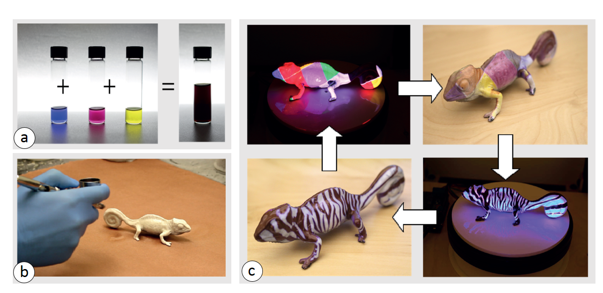
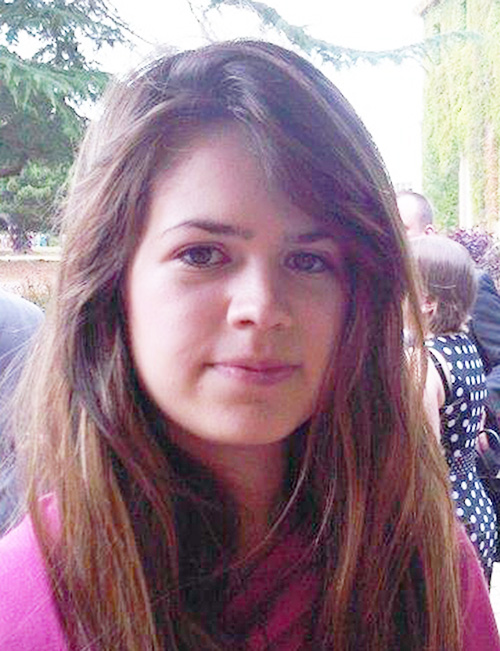

Since 2017 © MIT CSAIL (HCI Engineering group) [redesign by
moji
].
All Rights Reserved.



In this course, participants will learn about different ways to leverage color-changing reprogrammable materials for applications in HCI. Before brainstorming research directions for future work, we provide participants with a range of examples from the related work and will also conduct an interactive session in which participants can create their own textures using our system PhotoChromeleon (ACM UIST 2019 Best Paper Award).
Re-programmable materials, such as those which can change their color in response to external stimuli, hold the promise for a future in which objects will re-configure according to a user’s needs. In this course, we will provide participants with an in-depth understanding of color-changing materials, brainstorm novel applications in HCI, discuss technical solutions to realize participants’ ideas, and conduct a hands-on session with one color-changing system from our prior works. Our team is uniquely positioned to host this workshop since we combine expertise in materials, optics, computational geometry, and personal fabrication. At the end of this course, we will summarize the results as a research agenda for future work on re-programmable color-changing materials.
In this course, we will provide attendees with an in-depth understanding of color-changing materials and their applications, with a particular focus on photochromic systems. Through an interactive session, the participants will gain the knowledge and expertise to fabricate these materials and apply physical textures onto the material using computational methods. Furthermore, participants will gain an understanding of the challenges involved in material development, optics, and computing, and have an opportunity to brainstorm around these challenges, to enable them to start their own research projects in this field.
INTENDED AUDIENCE
CONTENT
| Time | Topic | Details |
| 20 mins | Introduction to color-change | We start the course with a short introduction to color-changing systems, including thermochromic (heat-responsive), electrochromic (voltage-responsive) and photochromic (light-responsive) materials, the mechanisms by which these materials change their color and potential applications, such as changing the color of accessories to match different outfits or textiles for different events in the same day. Other scenarios in-clude the ability to explore different textures or patterns on a product before purchasing, or large-scale applications including re-coloring entire rooms, walls or furniture. |
| 10 mins | Application Ideas (Brainstorming #1) | During the first brainstorming session, we will ask participants to split into small groups of 5 people and to brainstorm novel applications of color-changing materials for interactive HCI applications. We will then ask participants to share these applications within the group. |
| 10 mins | Technology (Brainstorming #2) | After sharing the ideas, we will regroup the teams accordingly to the most favored ideas (one idea per brainstorming table) and ask participants to discuss how the idea can be implemented. We will go to each table and contribute our knowledge and prior experi-ence working with these materials to the discussion. The goal of this part of the course is to get participants started on conducting research in the area of color-changing materials. |
| 10 min | Photochromic materials | After participants have brainstormed their own ideas and had an opportunity to start specifying the technology to make their idea work, we will provide one concrete project example, PhotoChromeleon, to illustrate how we developed an end-to-end system for col-or-changing applications in HCI. PhotoChromeleon is a method to create reprogrammable multi-color textures onto objects using photochromic inks, i.e. inks that can switch their appearance from transparent to colored when exposed to light of a certain wavelength. We will detail how we developed the optical system, the material mixture, and the optimization algorithm for transferring digital textures onto physical objects using these inks. |
| 20 min | Texture Application (Interactive session) | In the second half of the workshop, we will demonstrate our user interface and teach participants how to trans-fer multi-color high-resolution textures on physical objects color using the Photo-Chromeleon system. We will break up participants into small groups and together, develop a set of textures and project these textures onto an object through our user interface. We will provide participants with a thorough understanding of the computational system to enable them to either replicate it for future research or to build their own system. |
| 10 min | Challenges (Brainstorming session 2) | While the textures are being transferred, we will split the participants into three groups depending on their interests: materials, optics and computing. Each group will have the opportunity to learn about the current challenges and opportunities surrounding these technologies, such as accelerating the texture transfer speed by using stronger light sources, novel application scenarios that leverage the potential of color-changing materials, and extending the available color gamut by using new materials and improved computational models, and brainstorm ideas for addressing these challenges for future work. |
PRACTICAL WORK
Registration Instructions for attending the course
INSTRUCTOR BACKGROUND
|
Yuhua Jin (Postdoctoral Associate MIT CSAIL) conducts research at the intersection of HCI and Optical Engineering. His current work focuses on developing novel optical methods for personal fabrication tools. His recent work PhotoChromeleon has received a Best Paper Award at ACM UIST 2019.
Website: http://ultra-jin.com |
|
|  |
Isabel Qamar (Postdoctoral Associate MIT CSAIL) conducts research at the intersection of HCI and Material Science to develop re-programmable and interactive materials. She has received best paper and honorable mention awards for her work at ACM CHI and UIST and has hosted inter-disciplinary workshops aimed at bridging these fields.
Website: http://www.isabelqamar.co.uk |
|
Michael Wessely (Postdoctoral Associate MIT CSAIL) cconducts research on developing interaction-aware materials that can change shape and color, and scale from small prototypes to interactive architecture. He has published several papers at ACM CHI and ACM UIST, which have been awarded wwith two best paper awards.
Website: http://www.michaelwessely.com |
|
|
Stefanie Mueller (Assistant Professor MIT CSAIL) conducts research on how personal fabrication and advances in material science can be used to create personal physical objects that adapt themselves over time to better accommodate a users’ preferences and needs. Stefanie has also given a range of live demos, and organized workshops, tutorials, and courses over the last few years at ACM CHI and ACM UIST.
Website: http://stefaniemueller.org/ |